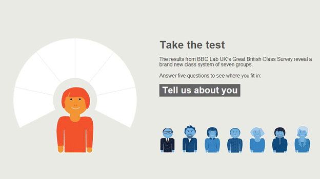

The Great British Class Calculator - category Mobile & Apps /Best practices and Integrated mobile experience (All devices)
The BBC's Great British Class Calculator app had more than 7 million page views in 2013 and was the most shared BBC News feature on Facebook and Twitter last year.
The app was designed to work on desktop, tablet and mobile (iOS and Android) as well as to be featured on-screen on the BBC News TV channel and BBC TV News bulletins.
BBC News mobile traffic has grown 60% in the past year and is nearing 50% of the news site traffic on an average day, so designing content to work responsively across all devices and desktop is now central to the BBC's approach to storytelling. Integrating that with BBC TV news output is also a major part of the BBC's multiplatform approach to covering stories.
New class structure
The Great British class calculator project began when the BBC's Lab UK teamed up with sociologists from leading universities to analyse the modern British class system. More than 161,000 people took part online in the Great British Class survey which aimed to find out if there was a new class structure in the UK, updating the traditional concept of upper, middle and working class.
The results of the survey were analysed by Professors Mike Savage and Fiona Devine and their teams at the London School of Economics and the Universities of York and Manchester. From the data, they identified seven social classes, ranging from the Elite at the top to a 'Precariat' at the bottom.
Desktop, tablet mobile and TV
The BBC visual journalism team worked with the university experts, the BBC's Lab UK and agency Applied Works to make a simple, engaging online app that enabled all users to discover which new class they fitted into. Users were then encouraged to share their class via social media.
BBC News correspondent Nick Higham used the calculator as an integral part of his TV reports on the class story, taking it out on the street on his iPad and interviewing members of the public about their results. Nick explains how the app worked both online and on TV, saying: "The class calculator means that audiences can do more than just consume BBC journalism - they can participate in an original way."
The project was a winner at the 2013 Global Editor's Network Data Journalism Awards, which recognise outstanding work and editorial excellence in the field of data journalism. The class calculator won in the category of data-driven apps.